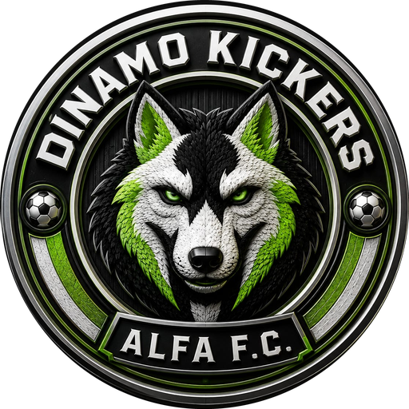

Prévia ·
Uma demonstração que a T Digital montou pra vocês verem como o Instagram da Dínamo pode ficar, feita com os lobos, as cores e as fotos que vocês mandaram. Nada foi publicado nem alterado no perfil de vocês. Aqui estão o perfil arrumado e os 3 posts que ficariam fixados no topo, respondendo o que os pais mais perguntam antes de matricular.
Dá pra enviar mesmo sem responder tudo. As respostas ficam salvas neste celular: se fechar a página, é só abrir de novo.